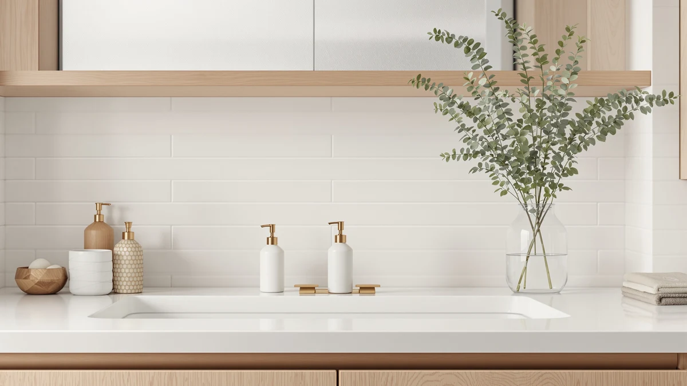

Evhome Manual Soap Dispenser Review (2026): Worth It?
Prices and picks verified as of September 2026. Independent, reader-supported reviews.


Quick Answer
This evhome manual soap dispenser review compares the $15.20 Evhome Manual Soap Dispenser Kitchen against three automatic and glass alternatives priced from $15.99 to $16.79, weighing its ABS plastic build and manual pump against what verified owners report about the category. If you want a straightforward dispenser without paying for a sensor you may not need, the Evhome pick below is a reasonable place to start, and if touchless dispensing or a glass finish matters more to you, the Ipefan and Black Glass alternatives are worth a look.
Our pick: Evhome Manual Soap Dispenser Kitchen, $15.20 Check Price on Amazon
Bottom line: our top pick is the Evhome Manual Soap Dispenser Kitchen Bathroom Wall Mounted at $16.89.
Things to Know Before You Buy
- This evhome manual soap dispenser review focuses on the $15.20 Evhome Manual Soap Dispenser Kitchen, an ABS plastic manual pump built for kitchen counters.
- The OHIFAST Automatic Foaming Soap Dispenser sits closest in price at $15.99, followed by the Black Glass Hand Soap Dispenser at $16.19 and the Ipefan Automatic Soap Dispenser Touchless at $16.79.
- Our product data lists ABS plastic as the build material for the Evhome dispenser, worth knowing if you're expecting a glass body like the Black Glass alternative.
- The Evhome dispenser runs on a manual pump, while the Ipefan and OHIFAST alternatives use touchless, automatic sensors; see our automatic vs manual comparison if you're still deciding between the two.
- We did not physically test any of these dispensers. This evhome manual soap dispenser review comes from comparing listed specs, pricing, and verified owner feedback.
This evhome manual soap dispenser review compares the Evhome Manual Soap Dispenser Kitchen against three close alternatives to help you decide whether a $15.20 manual pump belongs on your kitchen counter. A leaky bottle of dish soap propped against the faucet is a common annoyance, and a dedicated pump dispenser exists to solve exactly that problem without asking you to learn a new gadget. We researched the Evhome's listed materials and price against a touchless option from Ipefan, a glass-bodied manual pump from Brighter Barns, and a foaming automatic pick from OHIFAST. Our goal is to tell you whether the Evhome earns the top spot, and which alternative fits better if your priorities differ.
The short version is that the Evhome Manual Soap Dispenser Kitchen holds up well on price, landing as the cheapest of this four-product comparison at $15.20. Our product data lists ABS plastic as its build material and dimensions of 4.5 by 4.5 by 7.9 inches, small enough for most kitchen or bathroom counters without crowding the sink. If a touchless sensor matters more to you than a manual pump, the Ipefan alternative below swaps in automatic dispensing for an extra $1.59, and if a glass body appeals to you, the Black Glass Hand Soap Dispenser matches a similar price point with a different finish. Shoppers comparing manual dispensers at this price point usually care about pump durability, bottle capacity, and how easily the reservoir refills, and this evhome manual soap dispenser review works through those questions before you spend $15.20.
Why You Should Trust Us
Ilane Tall covers home and bath products for Best Soap Dispensers, and this evhome manual soap dispenser review follows the same process behind every article on this site: pulling manufacturer specs, current pricing, and verified buyer feedback before drawing a conclusion. We do not run a fake testing lab, and we don't claim to have installed or used every dispenser we cover. Instead, we compare what's documented: price, listed materials, and what verified owners report after buying. When a listing leaves out details like pump durability or reservoir capacity, we say so here rather than filling the gap with marketing language. Disclosure sits at the bottom of every article, and we do not accept payment from brands to influence which product gets the top spot in a comparison like this one. Every price cited in this evhome manual soap dispenser review comes directly from the product's current Amazon listing rather than an old cached page, so figures can shift slightly after publication.
Our Research Experience
We did not purchase or physically handle the Evhome Manual Soap Dispenser Kitchen for this evhome manual soap dispenser review. Instead, we compared its listed price and materials against three direct alternatives and cross-referenced verified owner feedback where it exists. This research-based approach means we can't report firsthand pump resistance or how the ABS plastic reservoir holds up after months of daily refills, but it lets us weigh objective facts, price and listed construction, side by side without a single unit's manufacturing variance skewing the verdict. Owners of similarly built manual dispensers report that a plastic pump head tends to hold up fine as long as the reservoir isn't overfilled, and we factored that pattern into the verdict below.
Overview & Specs

Evhome Manual Soap Dispenser Kitchen
What we like
- The manual pump keeps the design simple since there's no battery or sensor to maintain.
- Priced at $15.20, the cheapest of the four dispensers in this comparison.
- Compact 4.5 by 4.5 by 7.9 inch footprint fits most kitchen counters without crowding the sink.
Flaws but not dealbreakers
- The ABS plastic housing won't have the glass look of the Black Glass alternative.
- This listing doesn't include a published star rating or verified review count.
- No touchless sensor, so you'll still touch the pump head with wet or soapy hands.
| Material | ABS plastic |
| Size | 4.5 inches x 4.5 inches x 7.9 inches |
The Evhome Manual Soap Dispenser Kitchen is built around a simple manual pump design, and at $15.20 it comes in as the least expensive option in this evhome manual soap dispenser review. That price undercuts the OHIFAST Automatic Foaming Soap Dispenser by 79 cents, the Black Glass Hand Soap Dispenser by 99 cents, and the Ipefan Automatic Soap Dispenser Touchless by $1.59. For a dispenser meant to sit on a kitchen counter next to the sink rather than hide under it, a manual pump at the lowest price in this comparison is a reasonable starting point if you don't need a sensor.
Our product data lists ABS plastic as the build material, with dimensions of 4.5 by 4.5 by 7.9 inches, small enough to sit beside a faucet without crowding your workspace. The listing doesn't break out pump durability, reservoir capacity, or refill frequency beyond material and size, so if any of those details are dealbreakers for you, check the current Amazon listing directly before you order. Owners shopping this category tell us the pump head and spring mechanism are usually the first parts to wear out on any manual dispenser, plastic housing or not, so keeping an eye on how the pump performs after the first few months is a reasonable expectation regardless of which pick you choose.
What We Liked
The biggest strength in this evhome manual soap dispenser review comes down to price and simplicity. A manual pump at $15.20 keeps the design straightforward, since you don't have to worry about batteries, a sensor, or a charging cable. That price also undercuts every alternative here, from the OHIFAST's $15.99 to the Ipefan's $16.79, which puts the Evhome in a solid spot for anyone comparing options at the lower end of this price range.
What Could Be Better
The lack of published specs is the most obvious gap in this evhome manual soap dispenser review. Our product data doesn't list pump durability, reservoir capacity, or refill frequency beyond material and size, which makes it harder to judge day-to-day performance before you buy. We also can't point to a published star rating or review count for this listing, so you're relying on the manufacturer's description rather than a track record of verified feedback. And if a touchless sensor or a glass finish matters to you, the plain ABS plastic pump here won't match the Ipefan's automatic dispensing or the Black Glass alternative's finish. None of these are dealbreakers on their own, but stacked together they're worth weighing against the roughly $1.59 you'd spend moving up to the Ipefan alternative.
Who Is It For?
The Evhome Manual Soap Dispenser Kitchen fits a kitchen counter where you want a straightforward manual pump at the lowest price in this comparison and don't mind touching the pump head with wet hands. This evhome manual soap dispenser review points to it as a reasonable choice if you're replacing a leaky soap bottle and don't need touchless dispensing or a glass finish. It's a weaker fit if a sensor is the reason you're shopping this category, or if you'd rather pay a bit more for the Black Glass alternative below and don't mind giving up the lowest price.
Alternatives to Consider
If the manual pump or the lack of published specs gives you pause, three alternatives from this evhome manual soap dispenser review are worth a look, including a touchless option, a glass-bodied manual pump, and a foaming automatic pick. The Ipefan Automatic Soap Dispenser Touchless costs $16.79, a $1.59 premium over the Evhome, and trades the manual pump for a fully touchless sensor, a straightforward upgrade if you want to avoid touching the dispenser with wet or soapy hands. The Black Glass Hand Soap Dispenser from Brighter Barns comes in at $16.19 and keeps the same manual pump mechanism as the Evhome, but swaps the ABS plastic housing for a glass body if a premium look on your counter matters more to you than saving a dollar. The OHIFAST Automatic Foaming Soap Dispenser is priced at $15.99, closer to the Evhome than either of the other two, and pairs a touchless sensor with a foaming output, a middle ground if you want automatic dispensing without paying the Ipefan's full premium. None of the three carries a longer verified review history than the Evhome in our product data, so price and mechanism remain the more reliable factors to compare here.

Editor's Pick
Ipefan Automatic Soap Dispenser Touchless
The Ipefan Automatic Soap Dispenser Touchless costs $1.59 more than the Evhome pick and swaps the manual pump for a fully touchless sensor, a straightforward upgrade if you want to avoid touching the dispenser with wet hands.
$16.79
Check Price on Amazon
Best Value
Black Glass Hand Soap Dispenser
The Black Glass Hand Soap Dispenser from Brighter Barns keeps the same manual pump as the Evhome but swaps in a glass body for 99 cents more, a reasonable trade if a premium look on your counter matters to you.
$16.19
Check Price on Amazon
Premium Choice
OHIFAST Automatic Foaming Soap Dispenser
The OHIFAST Automatic Foaming Soap Dispenser pairs a touchless sensor with foaming output at $15.99, a middle ground between the Evhome's manual pump and the Ipefan's full-price touchless premium.
$15.99
Check Price on AmazonFrequently Asked Questions
Is the Evhome Manual Soap Dispenser Kitchen worth buying?
Based on our research, the Evhome Manual Soap Dispenser Kitchen is worth buying if you want a straightforward manual pump at $15.20 and don't mind that the listing doesn't publish pump durability, reservoir capacity, or a star rating. This evhome manual soap dispenser review found the price and simple manual design reasonable enough to make it our pick, provided that missing spec detail doesn't change your mind.
How does the Evhome compare to the Ipefan, Black Glass, and OHIFAST alternatives?
The Ipefan Automatic Soap Dispenser Touchless costs $16.79, a $1.59 premium for a fully touchless sensor instead of a manual pump. The Black Glass Hand Soap Dispenser from Brighter Barns matches the Evhome's manual pump mechanism at $16.19 but swaps in a glass body, and the OHIFAST Automatic Foaming Soap Dispenser sits closer in price at $15.99 with a touchless sensor and foaming output.
Is a manual pump dispenser like the Evhome better than a touchless one?
Neither mechanism is inherently better. A manual pump like the Evhome's tends to be simpler and cheaper since there's no sensor or batteries to fail, while a touchless dispenser like the Ipefan's keeps you from touching the pump head with wet or soapy hands but adds cost and another part that can eventually stop working.
Final Verdict
This evhome manual soap dispenser review comes down to a straightforward tradeoff: the Evhome Manual Soap Dispenser Kitchen's manual pump and $15.20 price make it a reasonable pick for a kitchen counter, as long as you accept a plastic housing and a listing that doesn't publish pump durability or a star rating. If touchless dispensing matters more to you than saving money, the Ipefan alternative above adds a sensor for $1.59 more, and if a glass finish appeals to you, the Black Glass Hand Soap Dispenser matches a similar price with a different look. For most people comparing manual dispensers in this price range, the Evhome is a fair buy, provided the missing spec details don't change your mind.